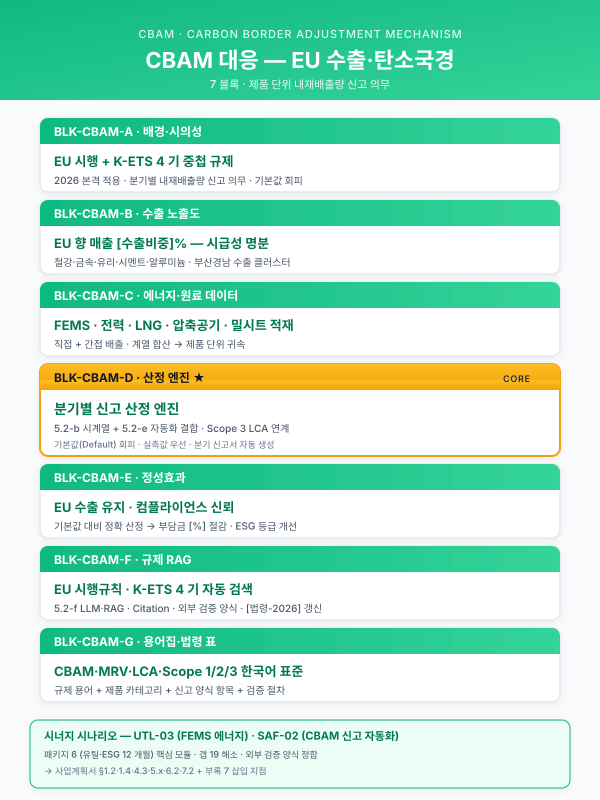

모듈 — CBAM(탄소국경조정제도) 대응 크로스커팅 블록¤
📖 약 18 분 읽기

1. 모듈 목적¤
본 모듈은 EU 탄소국경조정제도(Carbon Border Adjustment Mechanism, CBAM)의 본격 시행에 따라 부산·경남권 철강·알루미늄·비료·시멘트·수소 등 수출 제조기업이 직면한 **제품 단위 내재배출량(Embedded Emissions) 신고 의무**와 이에 수반되는 재무·규제 리스크를 사업계획서 논리에 투입하기 위한 재사용 블록 세트이다. Track 1 공통 본문 목차의 단일 섹션에 귀속되지 않고, **거시 환경(1.2) · 고객사 현황(1.4) · 데이터 유형(4.3) · 구축 상세(5.x) · 정성 기대효과(6.2) · Track 3 RAG 연계(7.2) · 부록**의 다수 지점에 분산 투입되는 **크로스커팅 블록**으로 설계되었다. 각 블록(A~G)은 서로 독립적이며, 사업계획서 성격·고객사 업종·규모에 따라 취사선택하여 삽입할 수 있다.
ℹ️ 페이지 정보 (워크스페이스 메타)
플레이스홀더 범례 — [수치] 수치 전반, [연도] 특정 연도, [계수] 배출계수·환산계수, [기간] 기간, [%] 비율, [법령-2026] 시행 시점에 따라 교체가 필요한 법령·고시·가이드라인 태그, [고객사] 고객사명, [공정] 대상 공정, [수출비중] EU 수출 매출 비중.
본 모듈에 포함된 구체 배출계수·신고 양식·시행 일정은 모두 "(확인 필요)" 표기 또는 플레이스홀더로 처리하였으며, 실무 투입 전 [법령-2026] 기준의 최신 고시를 확인하여 채워야 한다.
2. 삽입 지점 맵¤
| 삽입 위치 (상위 문서 섹션) | 본 모듈 블록 | 분량 추천 | 사용 성격 |
|---|---|---|---|
| Track 1 § 1.2 거시 환경 | BLK-CBAM-A 배경·시의성 | 1 문단 (200~300자) | 공통 고정 (수출 기업 전반) |
| Track 1 § 1.4 고객사 현황 | BLK-CBAM-B 고객사 CBAM 노출도 | 1~2 문단 (300~500자) | 고객사별 교체 (EU 수출 비중) |
| Track 1 § 4.3 데이터 유형 | BLK-CBAM-C 에너지·원료 데이터 | 블렛 + 1 문단 (200자) | 업종별 교체 (철강/알루미늄/비료 등) |
| Track 1 § 5.x 구축 상세 (5.2 AI 엔진 또는 5.1 데이터 정형화 하위) | BLK-CBAM-D 제품 단위 배출량 산정 엔진 | 1~2 문단 (300~500자) | 시나리오별 교체 (SCN-SAF-02 선택 시) |
| Track 1 § 6.2 정성 기대효과 | BLK-CBAM-E 수출 경쟁력·규제 대응 | 1 문단 (200~300자) | 공통 고정 |
| Track 1 § 7.2 Track 3 연계 / Track 3 본문 | BLK-CBAM-F CBAM 규제 문서 RAG | 1 문단 (250자) | Track 3 선택 삽입 |
| 부록 / 별첨 용어집 | BLK-CBAM-G 용어·FAQ | 0.5 페이지 | 공통 고정 (부록 자산) |
조합 패턴 예시 - 수출형 철강·금속 고객사 풀패키지: A + B + C + D + E + F + G (7개 블록 모두 투입) - ESG·규제 부수 명분으로만 활용: A + E (거시 환경과 정성 효과에만 언급) - Track 3 RAG 주제로 중심 배치: A + F + G + (SCN-LLM 결합)
3. 본문 블록¤
BLK-CBAM-A — 배경·시의성¤
- 블록 ID:
BLK-CBAM-A - 용도: Track 1 § 1.2 거시 환경 섹션에서 "왜 지금 제조 AI인가"의 규제적 명분 축으로 투입. 글로벌 저탄소 전환과 국내 제조업의 대응 필요성을 한 문단으로 정당화한다.
- 초안 문장 (공통 고정, 280자):
유럽연합은 [연도]년부터 탄소국경조정제도(CBAM)를 본격 시행하여, 역외에서 수입되는 철강·알루미늄·시멘트·비료·수소 등 품목에 대하여 제품 단위 내재배출량(Embedded Emissions)에 상응하는 배출권 가격을 관세 형태로 부과하고 있다. 이에 따라 국내 수출 제조기업은 제품이 생산되는 공정별 에너지·원료 투입량과 그에 기반한 직·간접 배출량을 분기 단위로 산정하여 신고하여야 하며, 데이터의 누락이나 검증 실패 시 기본값(Default Value)에 근거한 불이익 부과와 수출 경쟁력 하락이 동시에 발생한다. 국내 K-ETS 4기 운영과 RE100 이행 압력까지 중첩되는 상황에서, 제품·공정 단위의 신뢰성 있는 배출량 산정 체계는 선택이 아닌 의무적 인프라로 자리 잡았다.
- 주요 키워드·수치: 탄소국경조정제도(CBAM), 내재배출량, 직접·간접 배출, 기본값(Default Value), K-ETS 4기, RE100, Scope 3 LCA,
[연도],[법령-2026]. - 대체 문구 옵션
- 알루미늄·비철 업종: "역외에서 수입되는 …" 부분을 "알루미늄 압출·주조 제품 …" 으로 교체.
- 중소 규모 수출 비중이 낮은 고객사: 본 블록 생략 가능. 대신 BLK-CBAM-E의 "잠재적 수출 확장 대비" 톤으로 완화.
- R&D 연구개발계획서용: 첫 문장을 "글로벌 탄소 규제 환경은 …" 로 일반화하고, 제품 단위 배출량 산정을 **연구적 난제**로 재프레이밍.
BLK-CBAM-B — 고객사 CBAM 노출도¤
- 블록 ID:
BLK-CBAM-B - 용도: Track 1 § 1.4 고객사 현황 및 핵심 문제의식에서, 해당 고객사가 CBAM으로 인해 구체적으로 어떤 재무·운영 리스크에 노출되어 있는지 수치로 환기. 심사자에게 "이 기업에게 이 과제가 왜 시급한가"를 설득.
- 초안 문장 (고객사별 교체, 320자):
[고객사]는 주력 제품인 [공정] 기반 [제품군]의 연간 수출액 중 EU향 비중이 [수출비중]%에 달하며, 해당 물량이 CBAM 적용 대상 품목에 포함됨에 따라 [연도]년부터 분기별 내재배출량 신고 의무가 발생하였다. 현재 [고객사] 내부에는 공정별 에너지 사용량과 원료 투입량을 제품 단위로 귀속시키는 자동화된 산정 체계가 부재하여, 밀시트·FEMS 로그·생산실적 데이터가 각기 다른 시스템에 분산된 상태로 수기 집계에 의존하고 있다. 이로 인해 신고 건당 [수치]일의 내부 공수가 소요되고, 검증 실패 시 기본값 산정에 따른 추정 배출량 초과 부담이 연간 [수치]억 원 규모로 추정된다. 본 과제는 해당 구조적 공백을 제품·공정·시간 단위 데이터 파이프라인으로 해소하는 것을 핵심 명제로 한다.
- 주요 키워드·수치:
[수출비중], 분기별 신고, 밀시트, FEMS, 기본값 추정 부담,[수치]억 원. - 대체 문구 옵션
- EU 직수출 비중이 낮으나 Tier 2 공급사를 통해 간접 노출되는 고객사: "EU향 비중이 [수출비중]%에 달하며" 부분을 "EU 최종 수요처에 납품하는 1차·2차 완성품 제조사의 공급망에 포함되어 있어, 고객사로부터 제품 단위 배출량 자료 제출을 요구받고 있다"로 교체.
- 중소 고객사: "연간 [수치]억 원" 부분을 생략하고, "납품처 요구에 대응할 수 있는 기초 체계의 부재"로 순화.
BLK-CBAM-C — 에너지·원료 데이터 (활용 데이터 유형)¤
- 블록 ID:
BLK-CBAM-C - 용도: Track 1 § 4.3 활용 데이터 유형 섹션에서, 제품 단위 배출량 산정에 필요한 데이터 카테고리를 기존 시계열·비전·비정형 분류와 병렬로 추가. 블렛 + 간단한 서술 1문단 구조.
- 초안 문장 (블렛 + 240자 서술):
- 에너지 사용 데이터: 공정별 전력(kWh) · LNG · 코크스 · 수소 등 연료 투입량을 FEMS · 전력 계측기 · 가스 유량계로부터 분 단위로 수집한다.
- 원료·부원료 투입 데이터: 배합비·로트별 투입량을 MES 작업지시 및 원재료 입고 이력에서 수집하며, 공급사별 밀시트(성적서)를 OCR 처리하여 원재료 단계의 내재배출 계수와 매칭한다.
- 생산 실적 데이터: 제품별·로트별 생산량을 MES·ERP에서 확보하여 에너지·원료 투입량을 제품 단위로 안분(Allocation)하는 기준치로 활용한다.
- 배출계수 및 규제 기준 데이터: CBAM 기본값(Default Value), 국가·업종별 배출계수, K-ETS 할당 계수 등 외부 규제 기준 데이터를
[법령-2026]개정 이력과 함께 참조 테이블로 유지한다.상기 데이터는 단일 시계열 DB만으로는 제품 단위 귀속이 불가능하며, 설비·로트·제품·시간의 4차원 키를 공통 축으로 삼아 관계형 DB · 시계열 DB · 문서 저장소를 결합한 데이터 레이크 구조에서 통합 관리할 필요가 있다. 이는 기존 품질·예지보전용 데이터 파이프라인과 **동일한 수집 인프라 위에 배출량 산정 레이어를 추가**하는 방식으로 설계되어, 중복 투자를 최소화한다.
- 주요 키워드·수치: FEMS, 배합비, 밀시트 OCR, 제품 단위 안분(Allocation), 기본값(Default Value), 배출계수 테이블, 4차원 키(설비·로트·제품·시간).
- 대체 문구 옵션
- 비철·알루미늄: "코크스 · 수소" 를 "전해 전력 · 소모 애노드"로 교체.
- 비료·시멘트: 원료 투입을 "암모니아 · 인산 · 석회석"으로 교체.
- 데이터 성숙도 낮은 중소 고객사: 4 번째 블렛(배출계수 테이블)을 "외부 규제 기준은 초기에는 공공 데이터로 참조하며 사내 계수 고도화는 2단계 과제로 이관"으로 축약.
BLK-CBAM-D — 제품 단위 배출량 산정 엔진¤
- 블록 ID:
BLK-CBAM-D - 용도: Track 1 § 5.x 구축 상세에서, 시나리오 SCN-SAF-02(탄소배출 모니터링·CBAM 신고 자동화)를 채택하였을 때의 AI 엔진 구조. Track 1 § 5.2 AI 엔진 개발 단계의 변형 카드와 병렬로 배치되거나, 5.1 데이터 정형화 하위의 독립 모듈로도 사용 가능.
- 초안 문장 (시나리오별 교체, 420자):
본 사업에서 구축하는 제품 단위 내재배출량 산정 엔진은 공정별 에너지·원료 투입 시계열을 MES 생산실적과 결합하여, 제품·로트 단위로 직접 배출량(Scope 1)과 간접 배출량(Scope 2)을 자동 귀속시키는 구조로 설계된다. 엔진은 크게 ① 데이터 수집·정합성 검증 모듈, ② 배출량 산정 로직 모듈(투입량 ×
[계수]배출계수 + 안분 규칙), ③ 제품·기간 단위 집계·보고 모듈, **④ 근거 데이터 링크 및 감사 추적 모듈**의 4개 계층으로 구성된다. 산정 로직은[법령-2026]이 정의한 표준 방법론을 기본값으로 하되, 사내 측정값이 존재할 경우 이를 우선 적용하는 계층적(hierarchical) 구조를 취하며, 누락·이상치 발생 시 자동으로 기본값으로 전환하고 그 사실을 보고서에 주석으로 남긴다. 또한 분기 신고 주기에 맞춰 규제 양식에 부합하는 XBRL·CSV 등 표준 제출 포맷을 자동 생성하며, 각 수치가 어떤 원시 데이터에서 유래했는지를 한 번의 클릭으로 역추적할 수 있는 감사 추적 뷰를 제공한다. 이로써 사외 검증(Third-party Verification) 대응 공수가 최소화된다.
- 주요 키워드·수치: Scope 1·2 귀속, 배출계수
[계수], 안분 규칙(Allocation), 계층적(Hierarchical) 방법론, 사외 검증(Third-party Verification), 감사 추적(Audit Trail), XBRL·CSV 제출 포맷. - 대체 문구 옵션
- Scope 3까지 확장하는 대기업: 네 번째 문장 뒤에 "또한 공급망 배출량(Scope 3) 중 업스트림 원재료 구간에 대해서는 공급사로부터 수령한 제품단위 배출량 데이터를 수집·검증하여 Scope 1·2와 합산한다"를 삽입.
- 중견 규모로 Scope 3은 범위 외인 경우: "Scope 1·2" 를 그대로 유지하고 "Scope 3은 단계적 확장 대상으로 관리한다"를 본문 말미에 추가.
- R&D 연구개발계획서용: 전체를 "본 연구는 … 산정 알고리즘의 신뢰성과 표준 방법론 대비 정합성을 주요 연구 목표로 한다" 로 변환해 연구 과제 톤을 강화.
BLK-CBAM-E — 수출 경쟁력·규제 대응 (정성 기대효과)¤
- 블록 ID:
BLK-CBAM-E - 용도: Track 1 § 6.2 정성 기대효과 섹션에서, 본 사업의 비재무적 효과 중 "규제 대응 및 수출 경쟁력" 축을 독립 블록으로 제시. 6.2의 다른 정성 효과(지식 자산화·인력 양성·안전 공장 등)와 병렬.
- 초안 문장 (공통 고정, 260자):
본 사업을 통해 구축되는 제품 단위 배출량 데이터 체계는 단기적으로는 CBAM 분기 신고 의무를 안정적으로 이행하게 하여 규제 리스크 및 기본값 적용에 따른 수출 관세 부담을 최소화하며, 중장기적으로는 EU 이외의 주요 수출 시장에서 확산 중인 유사 규제(미국 CCA, 탄소세 도입 움직임 등)와 글로벌 고객사의 Scope 3 데이터 제출 요구에 선제적으로 대응할 수 있는 공급망 신뢰 기반으로 작동한다. 또한 K-ETS 할당·거래와 RE100 이행 로드맵 수립 시 활용 가능한 일관된 배출 원단위 데이터를 확보함으로써, ESG 공시(TCFD·ISSB) 대응과 녹색 금융 조달 협상에서도 유리한 근거 자료를 제공한다. 이는 수출 경쟁력과 기업가치를 동시에 방어하는 전략 자산이 된다.
- 주요 키워드·수치: 분기 신고, 기본값 적용 리스크, Scope 3 공급망 요구, K-ETS 할당, RE100, TCFD · ISSB 공시, 녹색 금융.
- 대체 문구 옵션
- 대기업·지주 차원: 말미에 "또한 그룹 전사 탄소중립(Net-Zero) 선언의 실행 데이터 기반으로도 활용되어, 그룹 ESG 전략과의 정합도를 높인다"를 추가.
- 중소 고객사: "녹색 금융 조달 협상" 부분을 "대기업 공급사 평가에서의 가점 확보" 로 순화.
- 부산·경남권 철강 벨트 맥락 강조: "글로벌 고객사의 Scope 3 …" 뒤에 "이는 부산·경남권 철강 수출기업 전반의 공통 과제이며, 본 사업은 지역 제조 생태계의 규제 대응 레퍼런스로도 기여한다"를 삽입.
BLK-CBAM-F — CBAM 규제 문서 RAG (Track 3 연계)¤
- 블록 ID:
BLK-CBAM-F - 용도: Track 1 § 7.2 Track 3 연계 섹션 또는 Track 3 본문에서, CBAM·K-ETS·RE100 등 복잡한 규제 문서군을 LLM+RAG로 자산화하여 실무자 질의응답과 보고서 초안 자동 작성에 활용하는 구조를 제시.
- 초안 문장 (Track 3 선택 삽입, 270자):
CBAM을 비롯한 국내외 탄소 규제 문서군은 [법령-2026] 기준만으로도 본문·부속서·가이드라인·양식·FAQ가 수천 페이지에 이르며, 시행 과정에서 배출계수·산정 방법론·양식이 지속적으로 개정되는 특성을 가진다. 본 사업에서는 이들 규제 문서와 사내 산정 지침·과거 신고 이력을 공통 임베딩 공간에 색인한 RAG(Retrieval-Augmented Generation) 지식 베이스를 구축하여, 실무자의 "이 제품이 CBAM 적용 대상인지", "이 공정 데이터를 어느 항목에 매핑해야 하는지", "최근 개정으로 달라진 점이 무엇인지"와 같은 자연어 질의에 근거 문단 링크와 함께 응답하도록 설계한다. 또한 분기 신고서 초안을 사내 데이터와 규제 템플릿을 결합하여 자동 생성하고, 검토자가 수정한 이력을 학습 피드백으로 축적하여 정확도를 점진적으로 끌어올린다.
- 주요 키워드·수치: 임베딩 색인, RAG, 근거 문단 링크, 분기 신고서 초안 자동 생성, 검토자 피드백 루프.
- 대체 문구 옵션
- SCN-LLM-02 장애 RAG와 결합: "질의에 … 응답하도록 설계한다" 뒤에 "기존에 구축한 SOP·장애 대응 RAG 지식 베이스와 동일 인프라에 배치되어 운영 비용을 공유한다"를 추가.
- 중소 고객사: "분기 신고서 초안 자동 생성" 부분을 "신고 항목별 점검 체크리스트 자동 생성" 으로 축소.
BLK-CBAM-G — 용어·FAQ (부록)¤
- 블록 ID:
BLK-CBAM-G - 용도: 부록 또는 별첨 용어집에서, 사업계획서 본문을 읽는 심사자·이해관계자가 CBAM 관련 용어를 빠르게 확인할 수 있도록 제공. 0.5 페이지 내외.
- 초안 문장 (공통 고정, 표 + 짧은 서술):
본 사업계획서에서 사용되는 CBAM 및 관련 규제 용어는 아래와 같으며, 구체적인 배출계수·신고 시점·예외 규정은
[법령-2026]의 최신 고시를 우선으로 한다.
용어 약어 정의 (요약) 탄소국경조정제도 CBAM EU가 역외 수입품에 대해 제품 단위 내재배출량 상응 가격을 부과하는 제도 내재배출량 Embedded Emissions 제품이 생산되는 전 공정에서 배출되는 직접·간접 온실가스 총량 직접 배출(Scope 1) — 사업장 내 연료 연소·공정 반응으로 발생하는 배출 간접 배출(Scope 2) — 외부에서 구매한 전력·열 사용에 수반되는 배출 공급망 배출(Scope 3) — 업·다운스트림 공급망에서 발생하는 배출 기본값 Default Value 사내 측정 자료 부재 시 규제 당국이 지정하는 대체 배출값 한국 배출권거래제 K-ETS 국내 산업부문 배출권 할당·거래 제도 (현재 4기 운영 중 / 확인 필요) 재생에너지 100% 이니셔티브 RE100 기업의 재생에너지 100% 사용 선언 이니셔티브 전과정평가 LCA 제품 수명주기 전반의 환경 영향 정량 평가 제품환경성적표지 EPD 제품 단위 LCA 결과를 표준화하여 공시하는 라벨 FAQ 예시 - Q. 분기 신고의 기준 시점은 언제인가? — 최신 EU 집행위 시행 규칙
[법령-2026]에서 확인 필요. - Q. 사내 측정 자료가 부족할 때 어떤 일이 발생하는가? — 기본값(Default Value)이 적용되며, 이는 실측 대비 보수적인 수치가 적용될 수 있어 세 부담이 증가할 수 있다. - Q. 제품 단위 배출량은 어떻게 산정하는가? — 공정별 에너지·원료 투입량을 제품·로트 생산량으로 안분하여 귀속시키는 것이 기본이며, 상세 방법은[법령-2026]부속서 및[법령-2026]가이드라인을 따른다.
- 주요 키워드·수치: 용어 정의 10종, FAQ 3종.
- 대체 문구 옵션
- 분량 제약 시: 용어표를 CBAM · 내재배출량 · Scope ½ · 기본값 5개로 축약.
- LCA·EPD 중심 사업: LCA·EPD 항목을 상단으로 이동하고 CBAM을 관련 규제 맥락으로 재배치.
4. 관련 시나리오¤
카탈로그 시나리오와의 매핑¤
| 카탈로그 시나리오 | 본 모듈과의 관계 | 주 사용 블록 |
|---|---|---|
| SCN-SAF-02 탄소배출 모니터링·CBAM 신고 자동화 | 주 대응 시나리오. 본 모듈 전체가 SCN-SAF-02의 사업계획서 기술을 확장한다. | A, B, C, D, E, F, G |
| SCN-UTL-01 공장 에너지 관리·최적화 | 에너지 데이터 수집 레이어를 공유. 에너지 절감과 배출량 감축을 이중 효과로 기술 가능. | C, E |
| SCN-UTL-03 환경 배출·폐수·미세먼지 관리 | 동일한 환경 규제 대응 축. 블록 E에서 정성 효과로 묶어 기술. | E |
| SCN-LLM-02 장애 대응 지식 RAG | Track 3 RAG 인프라 공유. 블록 F의 "동일 인프라 공유" 문구로 연결. | F |
| SCN-STL-08 밀시트 디지털화 | 원재료 단계 배출계수 매칭을 위해 필수. 블록 C 두 번째 블렛의 "OCR 처리"와 직결. | C |
| 부록 C-1 탄소중립·ESG AI | 본 모듈의 확장 축. Scope 3 · PPA · 배출권 거래 최적화로 로드맵 확장 가능. | A, E (확장판) |
본 모듈이 지원하는 시나리오 확장¤
- SCN-SAF-02+: 본 모듈을 기반으로, 공급사 제품 단위 배출량 데이터를 연합 수집하는 **Scope 3 확장 시나리오**를 파생.
- 저탄소 공정 설계 추천 (신규 시나리오 후보, 향후 카탈로그 확장 시 별도 ID 부여 예정 — 기존
SCN-UTL-04 원부재료 재고·발주 지능화와 이름 충돌 방지): 배출량 산정 엔진을 역으로 활용하여, 동일한 제품을 생산하되 공정 파라미터 조정으로 배출량을 최소화하는 최적화. 블록 D 의 산정 로직에 Track 1 § 5.2-e 공정 최적화 엔진을 결합. - ESG 통합 대시보드 시나리오: 블록 E와 BLK-CBAM-D를 근거로, CBAM·K-ETS·RE100·TCFD 공시 데이터를 단일 대시보드로 통합하는 시나리오.
5. 삽화·도식 후보¤
본 모듈을 사업계획서에 삽입할 때 함께 사용할 수 있는 삽화·도식은 아래와 같다. 모두 Mermaid 또는 구조화된 표로 초안 작성 후 실제 문서에서 디자인 툴로 재제작한다.
- CBAM 신고 흐름도 (블록 A·B·E 근처 배치)
- 현장 공정 데이터 → 산정 엔진 → 검증 → 분기 신고서 → EU 집행위 제출 → 결과 피드백의 연간 사이클.
-
Mermaid
flowchart LR형태로 7~8 노드. -
제품 단위 내재배출량 산정 프로세스 (블록 C·D 근처 배치)
- 에너지 투입량 · 원료 투입량 · 생산량 → 배출계수 적용 → 안분 규칙 → 제품·로트 단위 배출량 → Scope별 합산의 계층 구조.
-
블록 다이어그램 + 배출계수 참조 테이블 오버레이.
-
제품 단위 배출 분해도 (Sankey) (블록 D 부속)
- 공정별 에너지·원료 투입량이 제품별 내재배출량으로 귀속되는 흐름을 Sankey 다이어그램으로 표현.
-
제품 간 배출 원단위 비교에 유용.
-
CBAM 규제 RAG 아키텍처 (블록 F 전용)
-
규제 문서 수집 → 청킹 → 임베딩 → 벡터 스토어 → 질의 → 근거 링크 응답의 Track 3 표준 구조. CBAM 도메인 전용 필터·메타데이터 태그를 강조.
-
배출량 관리 대시보드 개념도 (블록 E·D 근처 배치)
-
좌측: 실시간 공정별 배출량 모니터링. 중앙: 제품·기간별 배출 원단위 추이. 우측: 분기 신고서 초안 및 K-ETS 할당 대비 여유 배출량. 하단: 감사 추적 뷰.
-
(선택) CBAM × K-ETS × RE100 규제 맵 (블록 A·E 강화 시)
- 3개 규제의 적용 범위·보고 주기·데이터 요구사항을 겹쳐 보여주는 벤 다이어그램 또는 매트릭스.
6. 유지보수 지침¤
CBAM 및 관련 규제는 [연도]년 이후에도 시행 규칙·배출계수·양식이 연 1~2회 개정될 가능성이 높다. 본 모듈의 유지보수는 **태그 기반 검색 → 해당 블록 수정 → 연동 블록 정합성 확인**의 3단계 절차를 따른다.
| 개정 사유 | 수정해야 할 블록·위치 | 사용 태그 |
|---|---|---|
| EU 집행위 시행 규칙 개정 (신고 주기·양식·대상 품목 변경) | BLK-CBAM-A 첫 문장, BLK-CBAM-D "산정 로직 … [법령-2026]" 구간, BLK-CBAM-G FAQ |
[법령-2026] |
| 국가·업종별 배출계수 고시 개정 | BLK-CBAM-C 네 번째 블렛의 "배출계수 테이블", BLK-CBAM-D "[계수]" 플레이스홀더, 부록 용어집의 기본값 설명 |
[계수] |
| 시행 시점·유예 기간 변경 | BLK-CBAM-A "[연도]년부터 …", BLK-CBAM-B "[연도]년부터 …", 전 블록의 [연도] 전부 |
[연도] |
| K-ETS 4기 → 5기 전환 또는 기본 계획 개정 | BLK-CBAM-A "K-ETS 4기", BLK-CBAM-E "K-ETS 할당·거래", BLK-CBAM-G 용어표의 K-ETS 설명 | [법령-2026]·"K-ETS" 문자열 검색 |
| 대상 품목 확대 (수소·유기화학 등 추가) | BLK-CBAM-A 첫 문장의 "철강·알루미늄·시멘트·비료·수소" 열거, BLK-CBAM-C 업종별 대체 문구 옵션 | "철강·알루미늄·시멘트·비료·수소" 문자열 |
| ISSB·TCFD 공시 기준 개정 (Scope 3 의무화 등) | BLK-CBAM-E "TCFD · ISSB 공시", BLK-CBAM-D Scope 3 확장 대체 문구 옵션 | "TCFD"·"ISSB" 문자열 |
| 고객사 EU 수출 비중·CBAM 노출도 변화 | BLK-CBAM-B 전면 교체 | [수출비중], [고객사] |
정기 점검 주기: 분기 1회 [법령-2026] 태그가 포함된 본문·FAQ를 순회 점검하며, 연 1회 전체 블록을 EU 집행위·환경부 최신 고시와 대조한다.
7. 확인 필요 항목 (실무 검증 후 채움)¤
아래 항목은 본 모듈 초안 작성 시점에서 **추측 기입을 금지한 영역**으로, 사업계획서 투입 전 사용자(실무 담당자)가 최신 고시·공식 문서를 근거로 확인·채움해야 한다.
- CBAM 본격 시행 및 분기 신고 개시 시점 — 전환기(Transitional Period) 종료 후 Definitive Period 개시일, 최초 분기 신고 마감일 (확인 필요).
- CBAM 적용 대상 품목의 정확한 HS 코드 범위 — 철강·알루미늄·시멘트·비료·수소 각 세분류 내 어느 HS 코드까지 대상인지 (확인 필요).
- 기본값(Default Value) 산정 방식 및 국가·공정별 수치표 — 사내 측정 자료 부재 시 적용되는 구체 계수 (확인 필요).
- EU 집행위 제출 양식(XBRL · CSV 등)의 공식 스키마 버전 — 시행 시점 최신 버전 (확인 필요).
- 국내 산업통상자원부·환경부의 CBAM 대응 지원 사업 및 가이드라인 — 소관 부처별 지원 프로그램, 검증기관 지정 현황 (확인 필요).
- K-ETS 4기 적용 기간·할당 계수·상쇄 규정 — 현재 시행 중인 기수와 연도별 세부 계수 (확인 필요).
- Scope 3 보고 의무화 일정 — ISSB S2, EU CSRD, 국내 지속가능성 공시 의무화 일정 (확인 필요).
- EU ETS 가격과 CBAM 인증서 가격 연동 공식 — 분기 평균 가격 산정 방식 (확인 필요).
- Third-party Verification 기관 요건 및 감사 범위 — CBAM 검증 인정 기관, 감사 대상 데이터 범위 (확인 필요).
- 국내 법령 수용 현황 — CBAM 대응을 위한 국내 관련 법령 제·개정 동향(대기환경보전법, 배출권거래법, 저탄소녹색성장기본법 후속 등) (확인 필요).
- BLK-CBAM-B의 고객사별 수치 —
[수출비중], 신고 건당 소요 공수(일), 기본값 적용 시 추정 부담(억 원) 전부 (확인 필요). - BLK-CBAM-C의 업종별 배출계수 참조표 URL·소스 — 공공 데이터 포털, 에너지공단, KEITI 등 공식 출처 (확인 필요).
📌 이 페이지 정보 (개발자용)
- 원본 파일:
모듈_CBAM_대응.md - 자산 군: 🧩 Cross-cutting 모듈
- slug 경로:
module/cbam.md - 워크스페이스 정책: 원본 .md 수정 0 — hooks 로만 시각 변환
- 자산 자족성 정상화: Phase E7 완료 (잔여 외부 갭 4)